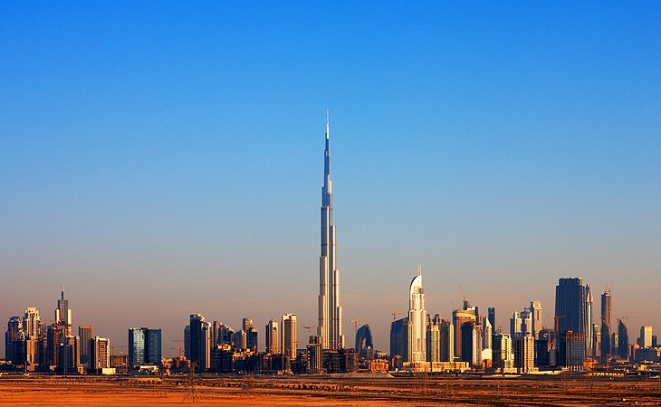
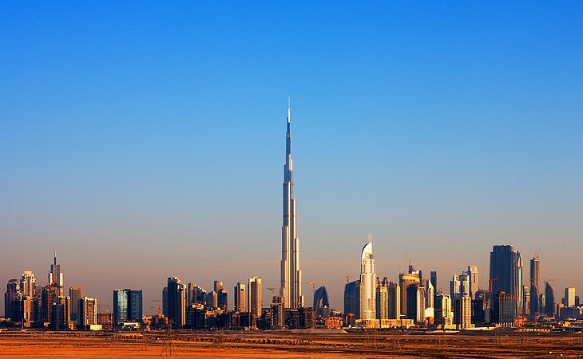

Experiences
Australia
Australia is abundant with unique experiences and awe-inspiring landscapes. There’s a well-known vibrancy in its natural beauty, but don’t forget to seek out its history and culture as well. There's plenty here to inspire your future travel plans so, go on, take a look around and let yourself dream of all the possibilities.

Bahamas
With more than 700 islands and cays, the Bahamas are best explored by boat. If you have sailing experience, Great Abaco is one of the most rewarding places to charter a yacht. The nearby Treasure, Green Turtle, Man-O-War and Elbow Cays are dotted with sheltered anchorages and people-free beaches.

Canada
Canada is one of the world’s most desirable tourist destinations. The second largest country on earth, Canada is blessed with abundant natural resources and wildlife, four distinct seasons, dynamic cities, culinary delights, pristine wilderness regions, and more outdoor adventures than you can shake a paddle at. Here are some ideas for sightseeing, places to visit in Canada and more.
China
Thrill to a culture-stuffed vacation in an insanely diverse country that’s developing at breakneck speed. China is a place where sprawling suburbs extend ever outward and cutting-edge skyscrapers are continually popping up. Despite the souped-up pace of modernity, ancient traditions and buildings are ever-present and perfect for exploring.
Costa Rica
Situated between Panama and Nicaragua, the tiny Central American country of Costa Rica is unlike any other, with a peaceful history and a booming tourism business. Breath-taking rainforests, booming volcanoes, some of the most rare and endangered wildlife on the planet, adventure, relaxation and fun abound.

Egypt
Egypt is not only a country of antiquity, but also of magnificent landscapes offering cities and oases, deserts and beaches, ancient obelisks and modern hotels. Bordered by the Mediterranean, the Red Sea and the fabled Nile River, you can experience eras as far back as the dawn of civilization. But Egypt is much more than Pyramids and monuments.

Norway
Thanks to the variety of landscapes, natural phenomena, activities and ways to get around, Norway makes a fantastic destination year-round. In summer, the extended daylight of the midnight sun is perfect for sightseeing and road trips; while in winter the long nights create ideal conditions for viewing the northern lights, perhaps while dog-sledding or snowmobiling.

Spain
Spain is made up of some of the most popular beach holiday destinations in Europe those found on the Costa Del Sol, Tenerife, the Balearic Islands, the Costa Blanca, and Barcelona. Spain's gastronomy is second and is well known its black foot cured ham, paella, olives, seafood, fish, garlic, as well as great wines such as Rioja and Sherry.
Tanzania
A visit to Tanzania can mean one of many things – it might be a city escape in Dar Es Salaam, a beach getaway in Zanzibar, a safari in Serengeti, a trek to the peak of Mt. Kilimanjaro or a combination of all of the above! The seasons certainly play a detrimental role to what kind of experience will be had and when, so be sure to read ahead in advance to ensure you have the kind of trip you’re intending for!

UNITED STATES OF AMERICA
Though its cities draw the most tourists – New York, New Orleans, Miami, Los Angeles and San Francisco are all incredible destinations in their own right – America is above all a land of stunningly diverse and achingly beautiful landscapes. In one nation you have the mighty Rockies and spectacular Cascades, the vast, mythic desert landscapes of the Southwest, the endless, rolling plains of Texas and Kansas, the tropical beaches and Everglades of Florida, the giant redwoods of California and the sleepy, pristine villages of New England.
You can soak up the mesmerizing vistas in Crater Lake, Yellowstone and Yosemite national parks, stand in awe at the Grand Canyon, hike the Black Hills, cruise the Great Lakes, paddle in the Mississippi, surf the gnarly breaks of Oahu and get lost in the vast wilderness of Alaska. Or you could easily plan a trip that focuses on the out-of-the-way hamlets, remote prairies, eerie ghost towns and forgotten byways that are every bit as “American” as its showpiece icons and monuments.
If you are heading to the lakes this summer, then there is nothing quite like a boat rental adventure to really make the trip. After all, why head to such beautiful spots right on the water if you aren’t going to make the most of them? From Lake Havasu City to Lake Tahoe, you are spoiled for choice of where to go. There are so many benefits to discovering the lakes on water. Available with or without captains and with the ability to be booked last minute, there is no reason not to explore the top US lakes via a boat rental. If you are looking for the top US lakes for a boat rental adventure, we have put together some of our top recommendations below that you are sure to love.
Experience


EUROPE
For most travelers, exploring European destinations is not only a must-do on their bucket list, but a lifelong journey, with many regions and cities to experience. While many of the best places to visit in Europe experience all four seasons, summer's optimal weather makes it easy to get around, shed some layers, and bask in glorious sunshine on antiquated terraces and soft, sandy beaches.
For jet-setters eyeing bright sunshine and blue-skied views, you'll have plenty of choice. From the beach-meets-city vibe of Barcelona to the intriguing wonder of Istanbul's varied customs, a getaway across the Atlantic will tease your senses, while creating memories - and maybe some freckles.
A few general Europe travel tips to get you started: Christmas holidays and long summer school holidays along with the Easter break can bring huge crowds to popular parts of Europe. Avoiding peak times will keep your prices down. Countries that don’t have the Euro are often cheaper Be aware of Schengen area visa restrictions. If you’re driving – don’t forget to buy a vignette and be aware of driving laws and restrictions. You’re unlikely to have difficulties if you only speak English, in most European countries locals are insanely good at English. But if you’re wandering off the beaten track, grab a phrasebook and learn what you can. It’s polite to try. Avoid places that purely exist for tourists. Put money in local pockets, meet more local people, and learn more about the country you’re visiting by finding the shops, restaurants, and places the locals love. You can zip around Europe cheaply by a budget airline – they’re all pretty similar – or use trains, buses, hire a car, ride a bike – Europe is pretty easy to get around. The weather in Europe swings from hot summers to freezing winters, be prepared for anything and be sure to check weather outlooks. Don’t rule out visiting in the dark and cold of winter, it’s my favourite time to be in Europe.
Experience


UNITED ARAB EMIRATES
The United Arab Emirates (or UAE) has quickly begun to top many bucket lists. The country consists of seven independent city-states, which are Abu Dhabi, Dubai, Ajman, Fujairah, Ras al Khaimah, Sharjah, and Umm al Quwain. While many people may have only heard of Abu Dhabi and Dubai, the five other Emirates are worth visiting if you get the chance. The cities are a combination of modern and traditional and desert and sea. Highlights include The Louvre (the sister museum of the one in Paris), the world’s largest carpet, diving for pearls, the world’s longest zipline, the Warner Brothers amusement park, and more!
The UAE can get pretty toasty, so the best time to visit is between October and April. Temperatures this time of year typically require a light jacket. If you want to visit the beach, plan your trip in October, March, or April when the weather is hot but still pleasant. UAE tends to see a spike in tourism these months so plan ahead of time and book in advance. Summer (May to September) in the United Arab Emirates means hot temps causing all of the locals to move their activities indoors. If you love shopping or want to visit UAE for diving, these are the best months to do so. Just don’t plan on having a vacation full of outdoor adventures!
What to expect: the official and national language of the UAE is Arabic, but English is used as a second language. Credit card use is on the rise in UAE so you shouldn’t come across any issues if you plan on using one during your visit. Visa and Mastercard are widely accepted with American Express being less likely to be accepted. Smaller stores and grocery stores may not accept card, so it’s best to keep small amounts of cash on you if needed. ATMs are found on almost every corner in big cities like Dubai and Abu Dhabi.
Experience


 
